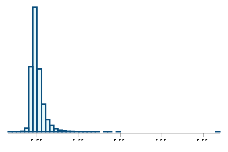
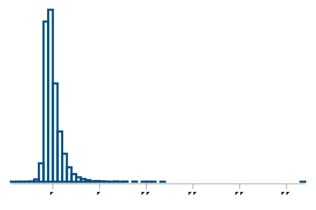
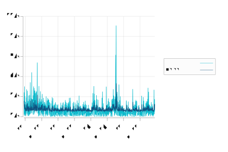
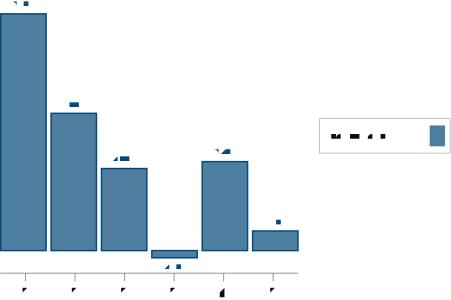
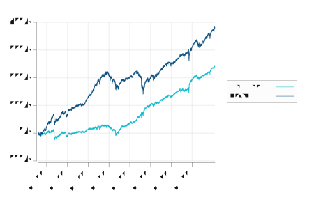

Forecasting |r_t|, the absolute log-return of the S&P 500, from lagged Mealy statistics. All predictors are known before day t.
| Model | α | β | R² | residual mean | residual std | residual autocorr | squared residual autocorr |
|---|---|---|---|---|---|---|---|
| |r_t| ~ std_{t-1} | 0.0050 | 2.2617 | 0.1042 | 0.0000 | 0.0081 | 1.0000 | 1.0000 |
| |r_t| ~ avg_std_{t-1} | 0.0050 | 2.2829 | 0.1052 | -0.0000 | 0.0081 | 1.0000 | 1.0000 |
| |r_t| ~ |r_{t-1}| | 0.0055 | 0.2694 | 0.0726 | -0.0000 | 0.0083 | 1.0000 | 1.0000 |
| |r_t| ~ garch_std_{t-1} | -0.0020 | 0.9064 | 0.2204 | 0.0000 | 0.0076 | 1.0000 | 1.0000 |



Signal: r_{t-1}. Returns are split into quantile buckets; the bar shows the mean next-day return for each bucket. Extreme buckets isolate the tails, so a genuine sign signal would show low buckets negative and high buckets positive.

| bucket | mean next-day return | std | count |
|---|---|---|---|
| 0 | 0.0008 | 0.0195 | 1002.0 |
| 1 | 0.0005 | 0.0104 | 3196.0 |
| 2 | 0.0003 | 0.0094 | 1120.0 |
| 3 | -0.0000 | 0.0094 | 1148.0 |
| 4 | 0.0003 | 0.0093 | 3214.0 |
| 5 | 0.0001 | 0.0134 | 1029.0 |
The previous-day return is mapped to a [0,1] position size: the most negative bucket is 100% long, the most positive bucket is 0% long. Strategy return = weight × next-day return. This turns the 8.5 bps tail signal into an accumulated return curve versus buy-and-hold.

| metric | value |
|---|---|
| signal strategy final return | 2.4144 |
| buy & hold final return | 3.8039 |
| average position size | 0.4979 |
| strategy scaled to 100% average exposure | 4.8490 |
The best one-step magnitude forecast here is the GARCH(1,1) conditional standard deviation, explaining about 0.2204 of the variance of
|r_t|. The simple Mealy standard-deviation predictor explains roughly half that. Daily return magnitude is only weakly predictable, which is what we expect for liquid markets.The striking number is the residual autocorrelation: it is essentially 1.0 for every model. That means the one-lag predictors capture only a thin slice of volatility clustering; large and small return magnitudes group together in ways that a single lag does not explain. The histograms below show the raw and standardized residuals from the Mealy-std model. A well-specified model would leave residuals that are roughly symmetric and free of autocorrelation.